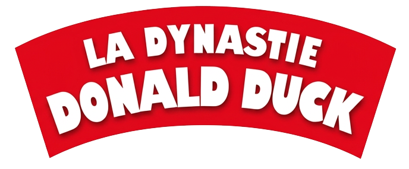

BD
Série complète

L'intégrale des grandes aventures du canard le plus célèbre du Calisota, dessinées et scénarisées par Carl Barks — retrouvez Donald, ses neveux et l'oncle Picsou à travers le monde, du Klondike aux pyramides.
8 tomes lus sur 14
57 %
Dessinateur & scénariste
Éditeur
Bibliothèque
12 CBZ · 2 manquants
Fiche externe
Les 14 tomes
Ordre de parutionTomes manquants
T11
Fichier CBZ absent de la bibliothèque
Rechercher ↗
T14
Fichier CBZ absent de la bibliothèque
Rechercher ↗